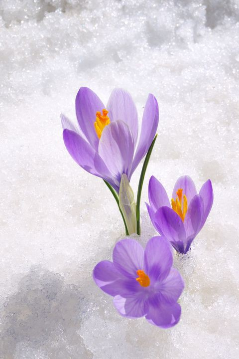
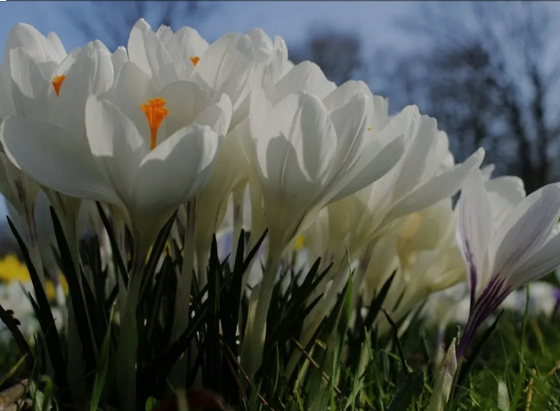
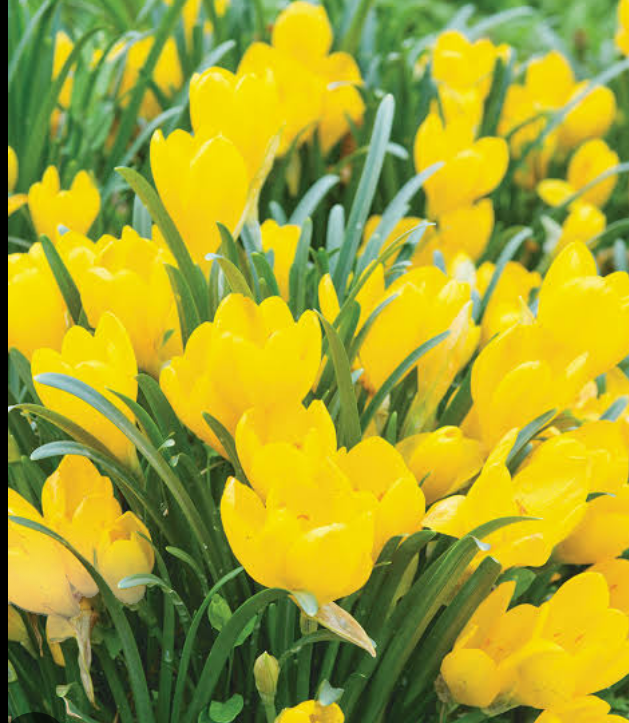
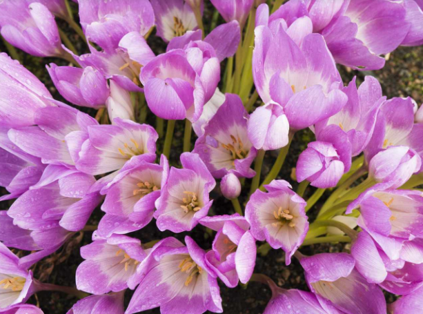

PURPLE
Purple, the traditional color of royalty, is tied to gracefulness, dignity, and personal success. It’s excellent for symbolizing someone’s recent accomplishments or to celebrate their many years of service or partnership. Darker shades, in particular, have a strong association with the wisdom of experience.
WHITE
White, the purest and most versatile flower color of them all. A bouquet of Crocuses in this color can indicate a humble approach or wishes of condolences for someone in grief. This color is commonly associated with funerals in some cultures, but it’s also used for weddings due to its ties to purity and elegance in others.
CROCUS LUTEUS

YELLOW
Yellow Crocus is the essence for new beginnings, fresh starts, new joy after the trials of Winter have left us. It offers you new energy and helps you to emerge playfully from the introspection of the dark cold months of Winter.
PINK
Pink, the color of innocence and youthfulness. This joyful color is less romantic than red, making it great for conveying love and admiration for friends and family members.
